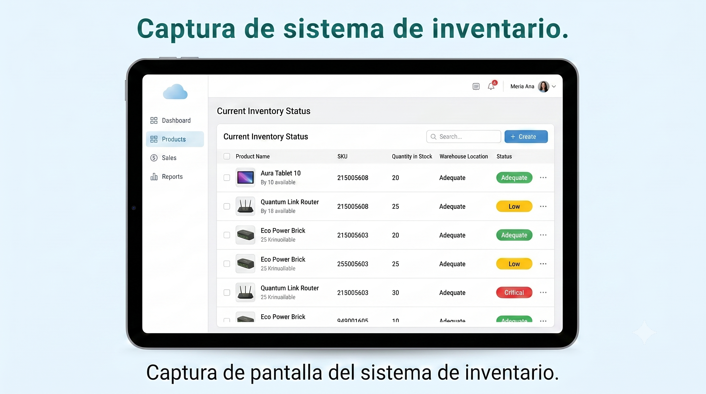
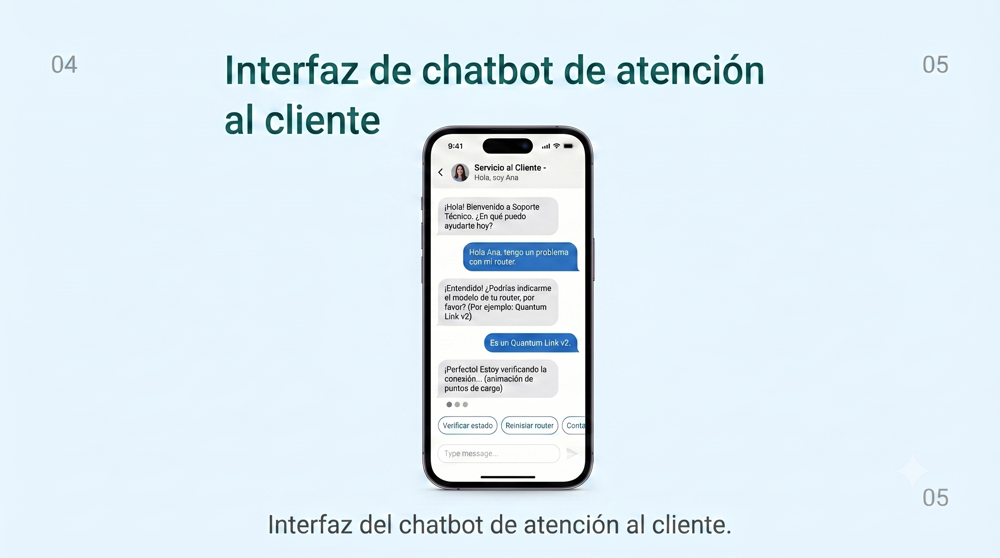

Soy estudiante de Ingeniería de Software con Inteligencia Artificial en SENATI. Me especializo en proyectos orientados a la mejora de procesos, automatización y aplicaciones web que integran soluciones sencillas y funcionales.
Me destaco por mi capacidad de aprendizaje rápido, sentido de responsabilidad y enfoque en el trabajo colaborativo. Busco construir experiencias digitales bien estructuradas y aportar con ideas claras en equipos de desarrollo.
02
Formación académica
Ingeniería de Software con Inteligencia Artificial – SENATI (2024-2027, en curso).
Fundamentos de IA y Machine Learning – SENATI, 2025.
Programación en Python para Ciencia de Datos – SENATI, 2025.
03
Proyectos destacados
Sistema de control de inventario – Aplicación web desarrollada con Python, Flask y PostgreSQL para gestionar productos, emitir alertas de stock y generar reportes.
Chatbot de atención al cliente – Asistente virtual con NLP y Dialogflow para contestar preguntas frecuentes y mejorar la atención al usuario.
Portafolio web responsive – Sitio diseñado con HTML, CSS y JavaScript para mostrar proyectos, habilidades y datos de contacto de forma clara y accesible.
04
Evidencias visuales

Evidencia 1: Captura de pantalla del sistema de inventario.

Evidencia 2: Interfaz del chatbot de atención al cliente.Evidencia 3: Portafolio web responsive para mostrar proyectos.
05
Logros y reconocimientos
Participación en hackathon estudiantil de soluciones con IA (2025).
Miembro activo del club de robótica e innovación tecnológica de SENATI.
Reconocido por trabajo en equipo y entrega de proyectos dentro de los tiempos establecidos.
06
Link del CV
Este portafolio integra el CV basado en el modelo trabajado en clase. Puedes ver el documento completo desde el siguiente enlace: